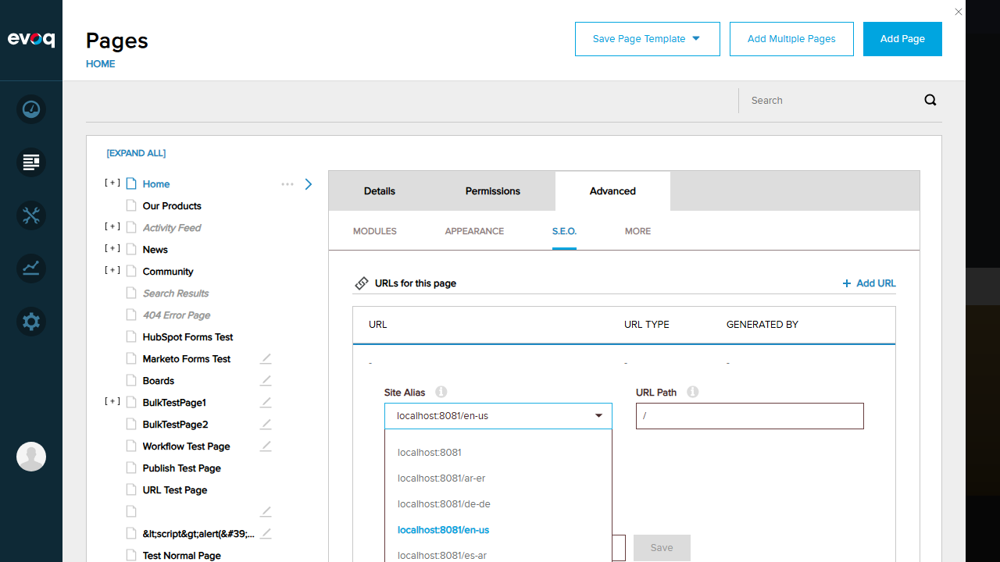
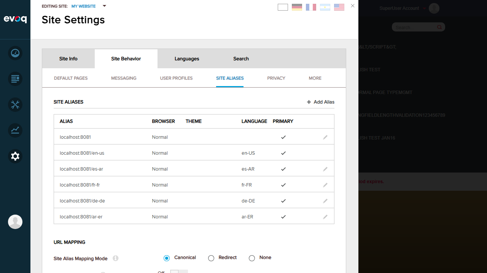
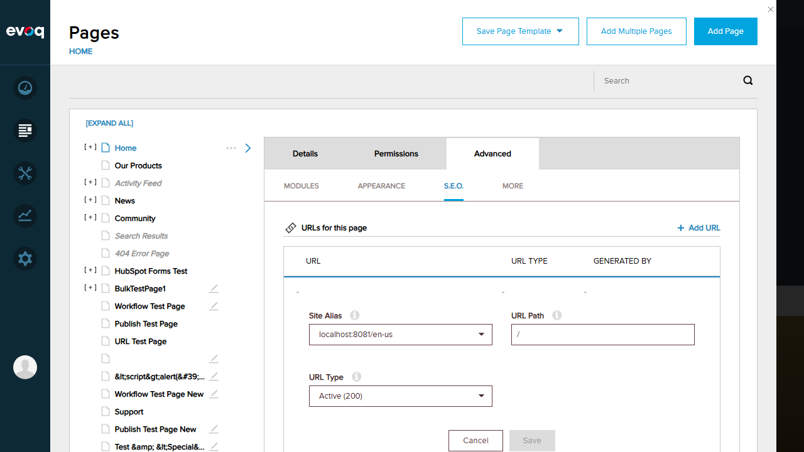

URL Management General Settings
The SEO > URL Management section shows the general URL rewriter and redirect settings.

Extension: Evoq.PersonaBar.UrlManagement (PersonaBar Module)
Feature Name: URL Options Configuration
Description: Retrieve and manage URL management options including locales, status codes, and site aliases
Feature Priority: Medium
UI Location: Admin > Persona Bar > Site Behavior > URL Management > Settings
Test Date: January 6, 2026
| Test Scenario | Status |
|---|---|
| Retrieve all available locales | PASS |
| Get supported status codes list | PASS |
| Retrieve site aliases and primary alias | PASS |
| Get site alias usage options | PASS |
| Verify correct locale configuration | PASS |
| Test with multi-locale setup | PASS |
| Verify primary alias identification | PASS |
Overall Result: 7/7 Tests Passed
Status: PASS
Description: Verify that the system correctly retrieves and displays all configured locales.
Expected Result: All configured locales should be available in the Site Alias dropdown
Actual Result: 5 locales retrieved successfully: en-US, es-AR, fr-FR, de-DE, ar-ER
Status: PASS
Description: Verify that the supported HTTP status codes are correctly retrieved and displayed.
Expected Result: Status codes 200 (Active) and 301 (Redirect) should be available
Actual Result: Both status codes displayed correctly: "Active (200)" and "Redirect (301)"
Status: PASS
Description: Verify that all site aliases are retrieved and the primary alias is correctly identified.
Expected Result: All site aliases should be listed with primary alias clearly identified
Actual Result: 6 site aliases retrieved. Primary alias (localhost:8081) identified with checkmark in PRIMARY column.
Status: PASS
Description: Verify that site alias usage/mapping options are available.
Expected Result: Site alias mapping/usage options should be available
Actual Result: Three mapping modes available: "Canonical", "Redirect", and "None"
Status: PASS
Description: Verify that each site alias is correctly associated with its locale.
Expected Result: Each locale-specific alias should have the correct language code
Actual Result: Locale configuration verified:
| Site Alias | Language Code |
|---|---|
| localhost:8081 | (Default/None) |
| localhost:8081/en-us | en-US |
| localhost:8081/es-ar | es-AR |
| localhost:8081/fr-fr | fr-FR |
| localhost:8081/de-de | de-DE |
| localhost:8081/ar-er | ar-ER |
Status: PASS
Description: Verify the feature works correctly with multiple locales configured.
Expected Result: System should correctly handle multi-locale configuration
Actual Result: Multi-locale setup confirmed with 5 locales (English, Spanish, French, German, Arabic). All locales correctly accessible via site aliases.
Status: PASS
Description: Verify that the primary site alias is correctly identified in the system.
Expected Result: Primary alias should be clearly identified
Actual Result: Primary alias "localhost:8081" correctly identified with checkmark in PRIMARY column. Each locale also has its own primary alias for that language.
The SEO > URL Management section shows the general URL rewriter and redirect settings.
Individual page URL settings showing existing URLs with their types (Active/Redirect).

The Add URL form showing Site Alias, URL Path, and URL Type fields.
